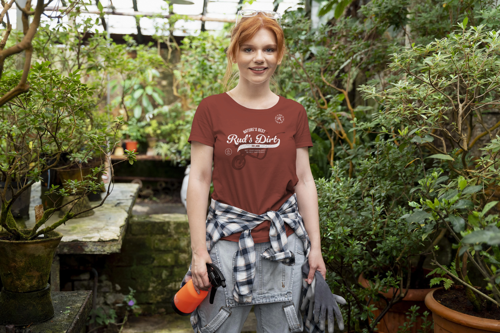
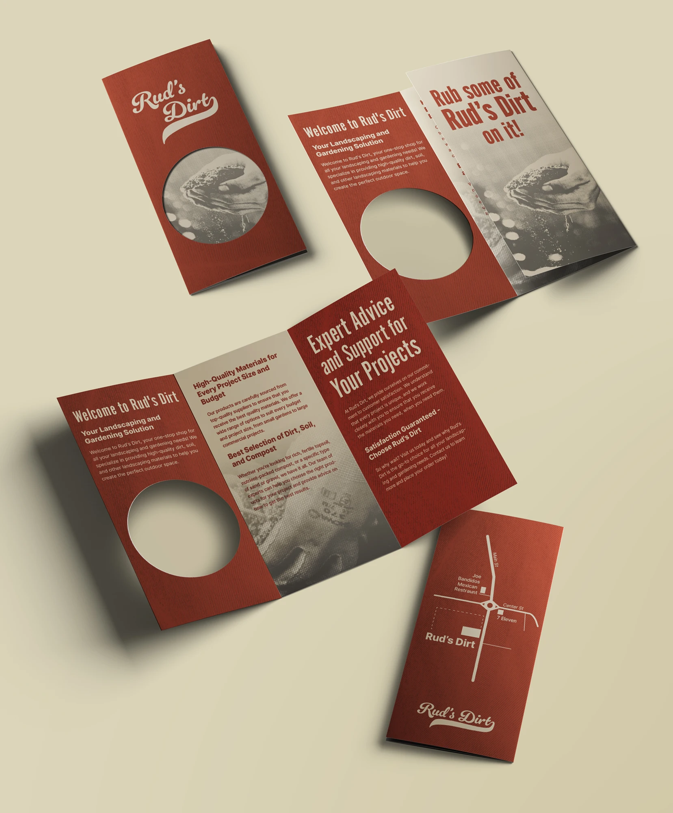
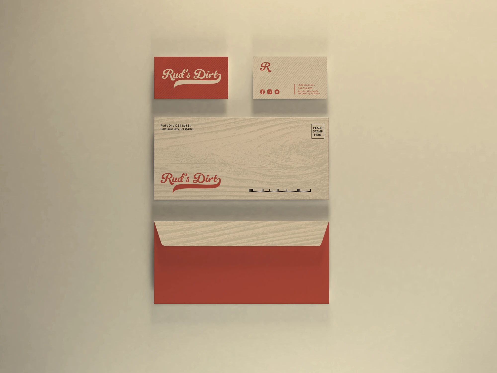
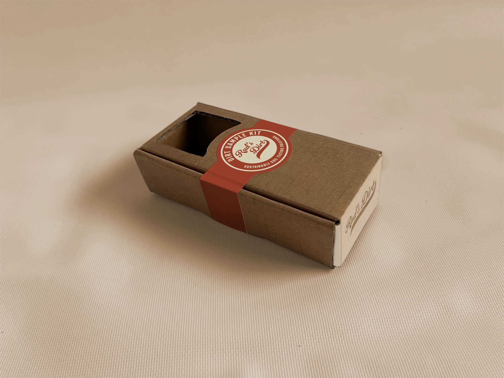
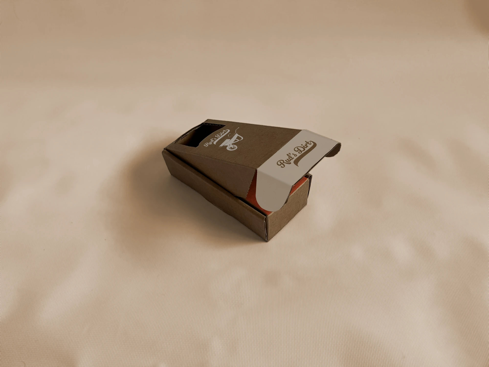
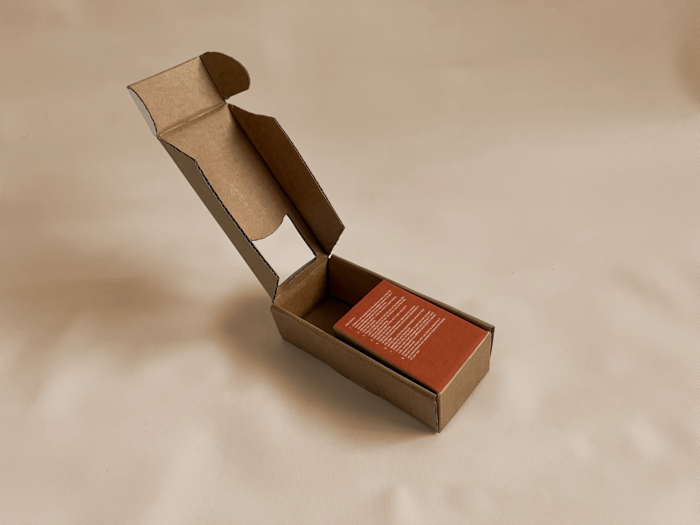
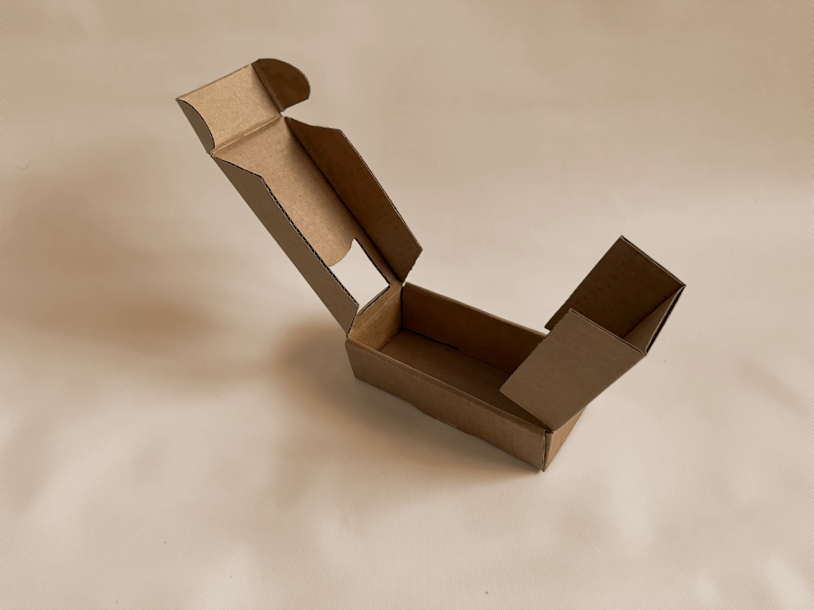

Brand identity / Print, stationery, packaging, apparel
Rud’s Dirt
Branding and marketing pieces for a soil and excavation outfit: a trifold, stationery, a kraft mailer box and a shirt the crew would actually wear.

Apparel
The mark, wornScreen-printed tee · one colour on brick red
Rud’s Dirt sells soil, gravel and excavation to homeowners who mostly want to trust that the truck will show up. The identity leans on that: a plain, confident wordmark, one brick red, and kraft board wherever the material could carry it.
The trifold does the explaining, with a die-cut circle that lets the inside show through the cover, while the business card and envelope keep to the red-and-cream pairing so the stack of stationery reads as one set.
The mailer box was designed for soil samples, with the mark on the lid and a red band as the only printed colour, so it stays cheap to produce and obvious on a porch.
- 01
Print
Trifold brochure with a die-cut cover.
- 02
Stationery
Business card and envelope.
- 03
Packaging
Kraft mailer box with a single-colour band.
- 04
Apparel
Screen-printed tee.












Next project
Book Cover